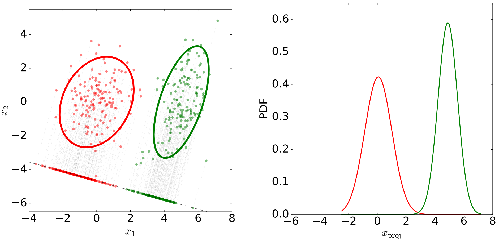

Principal Component Analysis is used mostly for data approximation and identifying sources of variance in the data.
Let the data be \(\{x_i:i = 1,\dots,N\}\) with sample mean \(\overline x = \frac 1 N \sum_{n=1}^N x_n\). Let us find the unit vector \(\bold u_i\) to project to such that the variance \(J(\bold u_1)\) of the projected data is maximized. The projection \(x_n^{(p)}\) of an \(x_n\) to one-dimensional subspace generated by \(\bold u_1\) is given by: \[ \array{x_n^{(p)} = \bold u_1(\bold u_1^T x_n) &\bold u_1^T \bold u_1 = 1} \] The variance \(J(\bold u_1)\) of projected data is: \[ J(\bold u_1) = \frac 1 N \sum_{n=1}^N (\bold u_1^Tx_n - \bold u_1^T) = \bold u_1^T S \bold u_1 \] Where \(S\) is the normalized scatter matrix: \[ S = \frac 1 N \sum_{n=1}^N (x_n - \overline x)(x_n - \overline x)^T \] The lagrangian of this optimization problem is: \[ L(\bold u_1,\lambda_1) - J(\bold u_1) + \lambda_1 (1-\bold u_1^T\bold u_!) = \bold u_1^T S\bold u_1+ \lambda_1(1- \bold u_1^T \bold u_1) \] Where \(\lambda_1\) is the Lagrange multiplier. Taking the derivative with respect to the vector \(\bold u_1\) and setting it to zero gives us: \[ \frac{\partial L(\bold u_1,\lambda_1)}{\partial \bold u_1} = S \bold u_1 - \lambda_1\bold u_1 = 0\\ S \bold u_1 = \lambda_1 \bold u_1 \] This is the characteristic equation for the covariance matrix \(S\). Any eigenvalue \(\lambda_1\) and its corresponding eigenvector \(\bold v_1\) solves this equation with variance \(J(\bold u_1)\) equal to : \[ J(\bold u_1) = \bold u_1^TS\bold u_1 = \bold u_1^T \lambda_1\bold u_1 = \lambda_1 \] The maximum is attained if \(\lambda_1\) is the larges eigenvalue of the matrix \(S\) and \(\bold u_1\) is its corresponding eigenvector.
We can also adapt this to a \(2\)-D subspace with the following formula: \[ J(\bold u_1, \bold u_2) = \frac 1 N \sum_{n=1}^N [\bold u_1 ^T(x_n-\overline x)]^2 +[\bold u_2^T (x_n - \overline x)]^2 \]
Consider the complete orthogonal basis \(\{u_i\}\) where \(i = 1,\dots,D\): \[ \bold u_i^T \bold u_j = \delta_{ij} \] Each point can be represented as: \[ x_n = \sum_{i=1}^D \alpha_{ni}\bold u_i \] and: \[ x_n = \sum_{i=1}^D(x_n^T \bold u_i)\bold u_i \] For each \(x_n\) we can create an approximation by truncating this expansion to only \(M\) components, the remaining \(D-M\) components approximated by constants \(b_i\). The approximation \(\tilde x_n\): \[ \tilde x_n = \sum_{i=1}^M (x_n^T \bold u_i)\bold u_i + \sum_{i=M+1}^D b_i\bold u_i \] And: \[ \array{b_i = \overline x^T \bold u_i & i = M+1,\dots,D} \] The task is to find the optimal orthonormal basis \(\{u_i\}\) which produces the best approximation measured by: \[ J(\{\bold u_i\}) = \frac 1 N \sum_{n=1}^T |\!| x_n - \tilde x_n |\!|^2 \] The minimum error criterions is the complement of the maximum variance criterion and this the solution to the set \(\{\bold u_i\}\) is the same.
Dimensionality can be high, even higher than the number of samples. Even if our data has 1 million dimensions \((D = 1M)\) and the number of samples is \(N=100\), it would not be efficient to compute the eigen value for the \(1M\times 1M\) matrix as its ranking will always be at most \(N\). So we can define \(\bold X\) as a matrix formed by stacking all data vectors: \[ \bold X = [x_1-\overline x, \dots,x_N - \overline x] \] And we will obtain the following \(S\) matrix: \[ S = \frac 1 N \bold X \bold X^T \] And the characteristic equation is: \[ \frac 1 N \bold X \bold X^T \bold u = \lambda \bold u \] Left multiplying \(\bold X^T\) gives us: \[ \frac 1 N \bold X^T \bold X \bold X^T \bold u = \lambda \bold X^T \bold u\\ \frac 1 N \bold X^T \bold X w = \lambda w\\ \] Now we see that \(\bold X^T \bold X\) has a size of \(100\times 100\), exactly the same as the set of eigenvalues. Left multiplying again with \(\bold X\): \[ \frac 1 N \bold X \bold X^T (\bold X w) = \lambda (\bold X w) \] In conclusion, if \(D >\!> N\), form the matrix \(\bold T = \frac 1 N \bold X^T \bold X\) and compute its eigenvalues \(\lambda\)’s and eigenvectors \(w\). Compute the eigenvectors of \(S = \frac 1 N \bold X \bold X^T\) as: \[ \bold v - \frac {\bold X w}{|\!|\bold Xw|\!|} \]
The goal of this algorithm is to project data to a \(1D\) subspace such that a low-error classifier can be constructed. For this we are going to find a direction to project the data such that the two classes are well separated in this projection:

We say that a separation is higher when one of the following things happen:
These two observations suggest the following criterion to optimize: \[ \frac{(\mu_1 - \mu_2)^2}{s_1 + s_2} \] Where \(\mu_i\) is the mean of projected data: \[ \mu_i = \frac 1{N_i} \sum_{n=1}^{N_i} \bold v^T x_n^i \] And \(s_i\) is the scatter of projected data: \[ s_i = \sum_{n=1}^{N_i} (\bold v^T x_n^i - \mu_i)^2 \] Now we can rewrite the criterion to optimize as: \[ \frac{(\mu_1 - \mu_2)^2}{s_1 + s_2} = \frac{\bold v^T \bold S_b \bold v}{\bold v^T \bold S_w \bold v} \] Where all the parameters except \(\bold v\) are computed from the training data: \[ \array{ \bold S_b = &(\overline x_1 - \overline x_2)(\overline x_1 - \overline x_2)^T\\ \bold S_w = & S_1 + S_2 \\ S_i = &\sum_{n=1}^{N_i} (x_n^i - \overline x_i)(x_n^i - \overline x_i)^T } \] And our optimization task is: \[ \bold v_1 = \underset {\bold v} {\arg\max} \frac{\bold v^T \bold S_b \bold v}{\bold v^T \bold S_w \bold v} \] With the following substitution \(\bold z = \bold S_w^\frac{1}{2} \bold v\), the criterion becomes: \[ \frac{\bold v^T \bold S_b \bold v}{\bold v^T \bold S_w \bold v} = \frac{\bold z^T \bold S_w^{\frac{-1}{2}}\bold S_b \bold S_w^{\frac{-1}{2}}\bold z} {\bold z^T \bold z} \] Now the denominator is a constant and the criterion is maximized when the nominator is maximized. We can do by taking the larges eigenvalue \(\lambda_1\) of the matrix \(\bold S_w^{\frac{-1}{2}}\bold S_b \bold S_w^{\frac{-1}{2}}\) and the corresponding eigenvector \(\bold z_1\): \[ \bold S_w^{\frac{-1}{2}}\bold S_b \bold S_w^{\frac{-1}{2}} = \lambda_1 \bold z_1 \] Replacing this vector in the function and operating on it, we get to the point where the dominant eigenvector (the only one with non-zero eigenvalue) must be: \[ \bold v_1 = \bold S_w^{-1} (\overline x_1 - \overline x_2) \]
Consider the case that the data points \(x\)’s are transformed by a non-singular linear transformation \(\bold A\). The entities appearing in the formulation and solution of LDA are then transformed as:
| points | scatter matrix | inverse scatter matrix | |
|---|---|---|---|
| Original | \(x\) | \(S\) | \(S^{-1}\) |
| Transformed | \(\bold Ax\) | \(\bold A S \bold A^T\) | \(\bold A^{-T} S^-1 \bold A^{-1}\) |
Thus \(\bold v_1 = \bold S_w^{-1}(\overline x_1 - \overline x_2)\) transforms to: \[ \bold v_1' = \bold A^{-T} \bold S_w^{-1} (\overline x_1 - \overline x_2) \] The original projected coordinates are: \[ \bold v_1^T x =(\overline x_1 - \overline x_2)^T \bold S_w^{-1} x \] And do not change under \(\bold A\), as: \[ \bold v_1'^T x' = (\overline x_1 - \overline x_2)^T\bold S_w^{-1}\bold A^{-1}\bold A x = v_i^T x \]
Multiple Discriminant Analysis (MDA) is a generalization of LDA to multiple classes \(K\). The same variables are defined as: \[ \bold S_w = \sum_{k=1}^K S_k\\ \bold S_b = \sum_{k=1}^KN_k(\overline x_k - \overline x)(\overline x_k - \overline x)^T \\ \overline x_k = \frac 1 {N_k}\sum_{i=1}^{N_k} x_i^k \\ \overline x = \frac 1 N \sum_{i=1}^N x_i \] And the criterium to maximize is: \[ \frac{\det(\bold V^T\bold S_b\bold V)}{\det(\bold V^T\bold S_w\bold V)} \] The solution to this problem is again the most significant eigenvectors for the generalized eigenvalue problem: \[ \bold S_b \bold v = \lambda \bold S_w \bold v \]